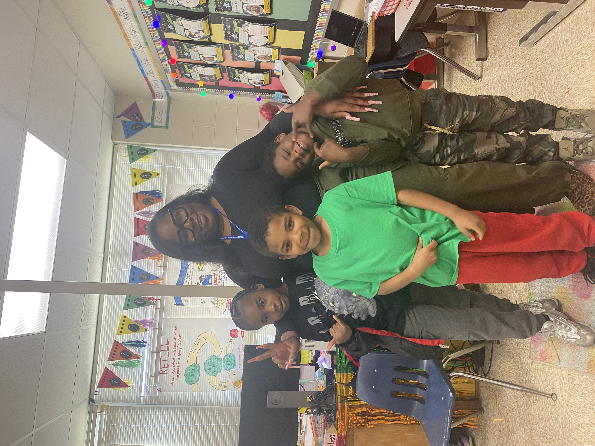

Danville City is one of the newest divisions in the Virginia Community Schools Initiative. The division will focus on two elementary schools, Arnett Hills and Gibson, in its first year. Danville is currently hiring a dedicated community school coordinator and collaborating with school leadership to plan programming around mentoring, family engagement, and after-school clubs.